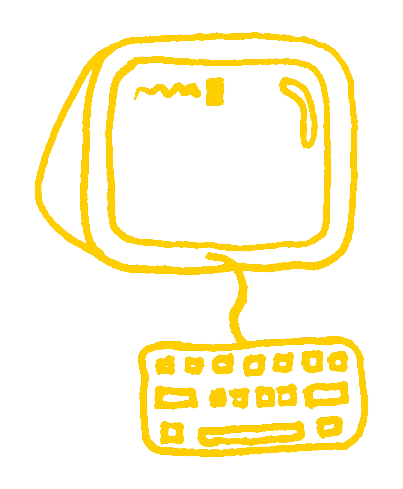

A Podcast On Creative Tools
Artists and Hackers is a podcast dedicated to community building and new digital tools of creation. We talk with programmers, artists, poets, musicians, bot-makers, educators, students and designers. We're looking at the current palette of artmaking tools online, and take a critical eye to the history of technology and the internet. We're interested in where we've been and speculative ideas on the internet's future.
This podcast is brought to you by: Lee, a media artist and professor at Purchase College; Maya, a musician and audio engineer studying New Media at Purchase College; and Caleb, a designer and researcher studying Culture and Media at The New School.